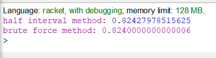
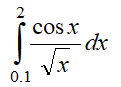
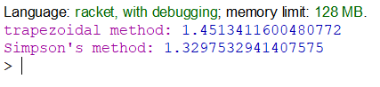

Вибір середовища
Racket — це універсальна багатопарадигмальна мова програмування та мультиплатформенний дистрибутив, який включає мову Racket, компілятор, велику стандартну бібліотеку, IDE, засоби розробки та набір додаткових мов. Мова Racket є сучасним діалектом Lisp і нащадком Scheme. Він створений як платформа для проектування та впровадження мови програмування. На додаток до основної мови Racket, Racket також використовується для позначення сімейства мов програмування та набору інструментів, що підтримують розробку на Racket і з ним. Racket також використовується для створення сценаріїв, навчання інформатиці та досліджень. Racket призначений для розробки програм та мов програмування. Це означає, що з його допомогою можна досліджувати не лише те, як писати програми, а й чому саме так.
Задача 1
Знайти корені нелінійного рівняння виду x2 - cos x = 0. Пошук наближеного значення хоча б одного кореня рівняння f(x) = 0 на відрізку [a; b] здійснювати методами простої ітерації та перебором. Значення a, b інтервалу вибрати самостійно. Порівняти результати розв’язків двома методами.
Код програми
#lang racket
;half interval method
(define (search f neg-point pos-point)
(let ((midpoint (average neg-point pos-point)))
(if (close-enough? neg-point pos-point)
midpoint
(let ((test-value (f midpoint)))
(cond ((positive? test-value)
(search f neg-point midpoint))
((negative? test-value)
(search f midpoint pos-point))
(else midpoint))))))
(define (average x y)
(/ (+ x y) 2))
(define (close-enough? x y)
(< (abs (- x y)) 0.001))
(define (half-interval-method f a b)
(let ((a-value (f a))
(b-value (f b)))
(cond ((< a-value b-value)
(search f a b))
((> a-value b-value)
(search f b a))
(else (error "Can't use the same values:" a b)))))
(display "half interval method: ")
(half-interval-method
(lambda (x) (- (* x x) (cos x))) 0.0 2.5)
;brute force method
(define (brute_force a b interval)
(for ([ x (in-range a b interval)])
(cond
[(close-enough? (- (* x x) (cos x)) 0.0)
(display x)
(display "\n")])))
(display "brute force method: ")
(brute_force 0.0 2.5 0.001)
Результати роботи програми
При виконанні програми рівняння обчислюється двома методами: методом бісекції та простим перебором. Чим меньше стоїть крок при виклику функції brute_force та чим менше число для перевірки точності в функції close-enough?, тим точніше отримуємо відподвіль при переборі. Але треба обов'язково паралельно змінювати ці два числа і, звісно, така точність впливає на швидкість виконання програми.
source file link
Задача 2
Написати процедури для обчислити інтеграла за формулами трапецій і Сімпсона. Порівняти результати обчислення.
Код програми
#lang racket
(define (trapezoidal f a b n)
(let ((step (/ (- b a) n)))
(* (/ step 2) (+ (tr_first_last f a b) (tr_doubled f (+ a step) b step))
)))
(define (tr_first_last f a b)
(+ (f a) (f b)))
(define (tr_doubled f a b step)
(if (>= a b)
0
(+ (* 2 (f a)) (tr_doubled f (+ a step) b step))))
(display "trapezoidal method: ")
(trapezoidal
(lambda (x) (/ (cos x) (sqrt x))) 0.1 2 4)
(define (simpsons f a b n)
(cond ((odd? n)
(error "N should be an even number:" n)))
(let ((step (/ (- b a) n)))
(* (/ step 3)
(+ (sm_first_last f a b) (sm_quadrupled f (+ a step) b step) (sm_doubled f (+ a (* 2 step)) b step))
)))
(define (sm_first_last f a b)
(+ (f a) (f b)))
(define (sm_quadrupled f a b step)
(if (>= a b)
0
(+ (* 4 (f a)) (sm_quadrupled f (+ a (* 2 step)) b step))))
(define (sm_doubled f a b step)
(if (>= a b)
0
(+ (* 2 (f a)) (sm_doubled f (+ a (* 2 step)) b step))))
(display "Simpson's method: ")
(simpsons
(lambda (x) (/ (cos x) (sqrt x))) 0.1 2 4)
Результати роботи програми
При виконанні програми інтеграл обчислюється двома методами: за формулами трапецій та Сімпсона. Обидві ці формули досить схожі, тому після написання першої функції, другу функцію було досить легко написати. Результати одного і того ж самого логарифму трохи відрізняються , бо методи мають різну точність.
source file link
Висновок
Після проведеної роботи було реалізовано дві програми для обчислень з використанням lambda та let форм. Друга програма для обчислення логарифму виявилася трохи легшою ніж перша, оскільки було досить легко зрозуміти та написати самі формули для розрахунку. Найбільшою складністю в цій лабораторній було розібратися з синтаксисом форм let та lambda.